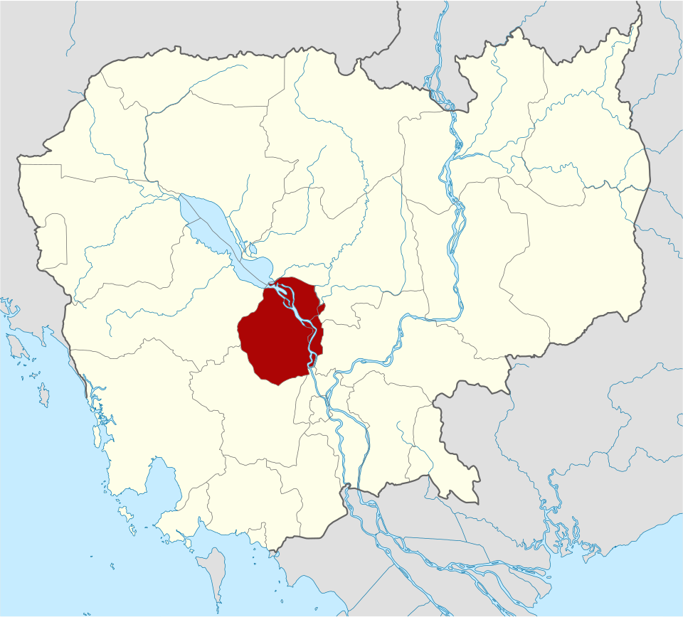
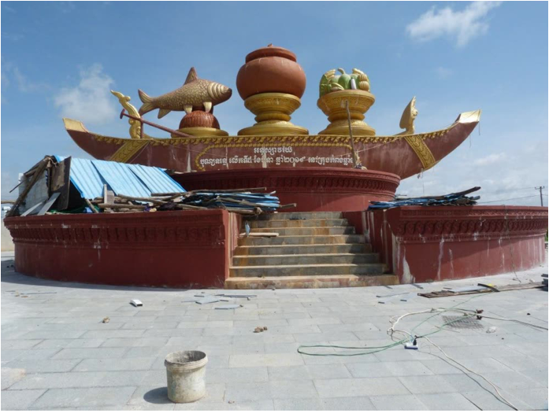
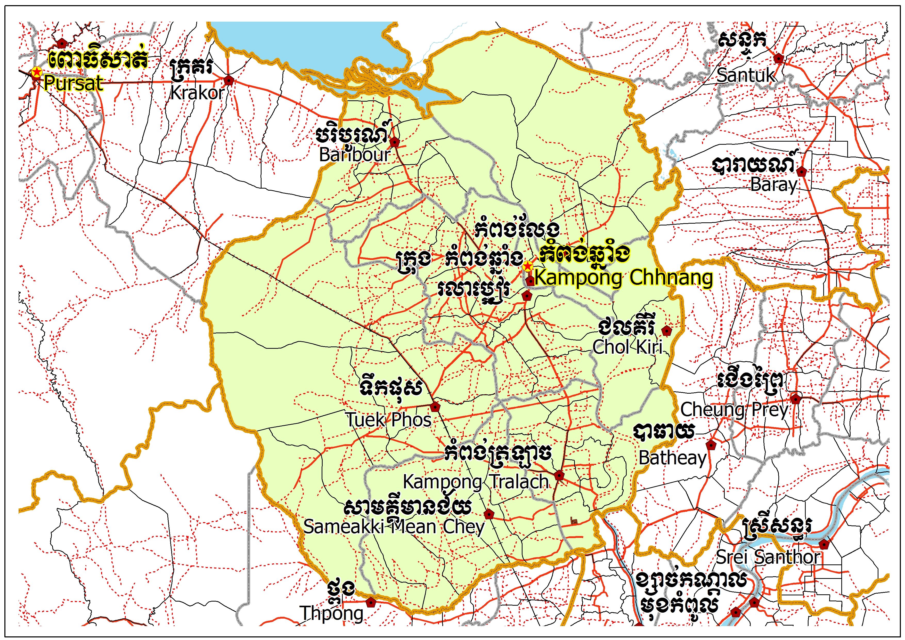
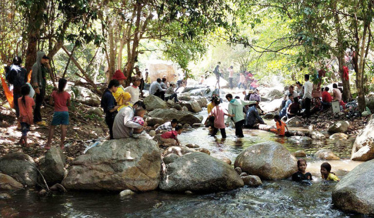
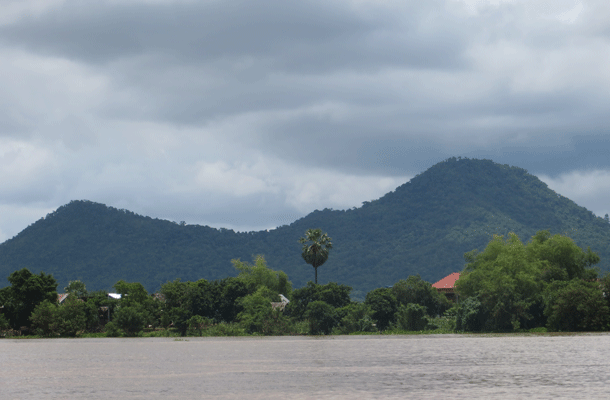
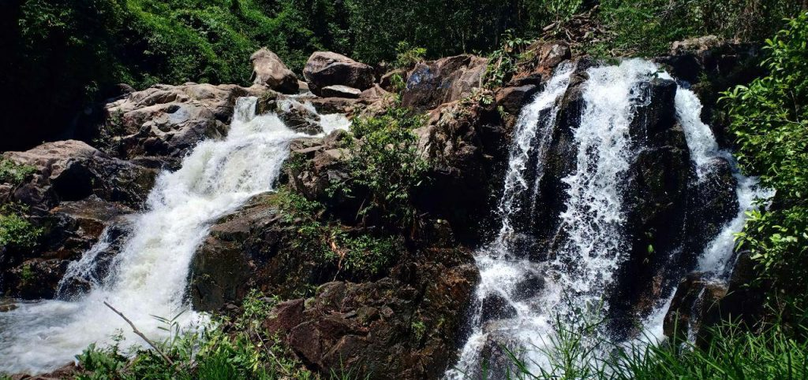

Kampong Chhnang
← ត្រឡប់ទៅផែនទីខេត្តកំពង់ឆ្នាំង ជាខេត្តមួយ ស្ថិតនៅភាគកណ្តាលនៃប្រទេស កម្ពុជា។ ខេត្តកំពង់ឆ្នាំង ជាខេត្តល្បីខាងផលិតក្អមឆ្នាំងមានគុណភាពល្អ អំពីដី។ ខេត្តជិតខាងគឺ (ពីខាងជើងតាមទ្រនិចនាឡិកាវិល) កំពង់ធំ កំពង់ចាម កណ្ដាល កំពង់ស្ពឺ និង ពោធិ៍សាត់។ ក្រុងទីរួមខេត្តកំពង់ឆ្នាំងគឺក្រុងកំពង់ឆ្នាំង។ ខេត្តកំពង់ឆ្នាំងកាលពីប៉ុន្មានសតវត្សកន្លងទៅគឺជាទីក្រុងឆ្នេរនៅតាមច្រកផ្លូវរវាង ចិន និង ឥណ្ឌា ដោយសារតែការហូរនាំដីល្បប់ពីទន្លេមេគង្គ ខ្សែឆ្នេរបានកាន់តែឃ្លាតឆ្ងាយពីសមុទ្រឆ្ងាយៗទៅ។ នៅពេលដែលទន្លេសាបបានផ្លាស់ប្ដូរខ្សែទឹកហូររបស់វា ទីក្រុងនេះក៏បានបាត់បង់ប្រភពទឹកដ៏សំខាន់របស់ខ្លួន និងដូច្នេះវាក៏បានក្លាយជារហោស្ថាន ប្រជាជនក៏រើលំនៅទៅកាន់ទីក្រុងមួយដែលគេហៅថា កំពង់ត្រឡាច។ ទីក្រុងមួយបានកកើតបន្តិចៗម្ដងជុំវិញទីនោះ ដែលនាំមកនូវជីវិតថ្មីដល់កំពង់ឆ្នាំង។ សារមន្ទីរមួយបង្ហាញនូវកំណត់ត្រាបុរាណវិទ្យាអំពីប្រវត្តិរបស់ទីក្រុងមួយនេះ។

ខេត្តកំពង់ឆ្នាំងស្ថិតនៅភាគកណ្ដាលប្រទេសកម្ពុជា។ ខេត្តកំពង់ឆ្នាំងមានព្រំប្រទល់ខាងជើងជាប់ខេត្តកំពង់ធំ ខាងកើតជាប់ខេត្តកំពង់ចាម ខាងត្បូងជាប់ខេត្តកំពង់ស្ពឺ និងខាងលិចជាប់ខេត្តពោធិ៍សាត់។ ខេត្តនេះស្ថិតនៅចម្ងាយប្រមាណ ៩១ គ.ម. ពីរាជធានីភ្នំពេញ។ ខេត្តកំពង់ឆ្នាំងមានអាកាសធាតុក្ដៅហើយសើមដូចបណ្ដាខេត្តទូទាំងប្រទេសកម្ពុជាដទៃទៀតដែរ។ រដូវវស្សាចាប់ពីខែ ឧសភា ដល់ខែ តុលា (សីតុណ្ហភាពពី ២៧ ទៅ ៣៥អង្សា សំណើម ៩០ % ) រ ដូវរងារពីខែ វិច្ឆិកា ដល់ខែ មីនា (សីតុណ្ហភាពពី ១៨ ទៅ ២៨ អង្សា) និងរដូវក្ដៅពីខែ មីនា ដល់ ខែ ឧសភា (សីតុណ្ហភាពពី ២៨ ទៅ ៣៦ អង្សា)។ វាគឺស្ថិតក្នុងវាលល្បប់ចំកណ្ដាលប្រទេសកម្ពុជានិងត្រូវនាំមកដោយទន្លេសាប ដៃនៃទន្លេមេគង្គ។ ទីក្រុងរាជធានីភ្នំពេញច្បាស់ជាលូតរហូតដល់វាព័ទ្ធជុំវិញដោយព្រំដែនខេត្តកំពង់ឆ្នាំងជាមិនខាន។


ខេត្តនេះត្រូវបានបែកចែកទៅជា ៨ ស្រុក-ក្រុង។ ស្រុកត្រូវបានបែងចែកបន្តទៅទៀតជា ៦៦ ឃុំ និង ៥៦៩ ភូមិ។ មានក្រុងមួយ ហើយនិង ៤ សង្កាត់។ ក៏មានអង្គការរដ្ឋបាលឃុំចំនួន ១០២។
រមណីយដ្ឋានទឹកធ្លាក់ថ្មក្រាល គឺជារមណីយដ្ឋានមួយក្នុងចំណោមរមណីយដ្ឋានចំនួន៣ ដែលមានទឹកធ្លាក់នៅក្នុងស្រុកទឹកផុស ដែលស្ថិតនៅក្នុងភូមិកោះខ្ទុំ ឃុំជៀប ស្រុកទឹកផុស ។ ភ្ញៀវទេសចរណ៍ដែលមានបំណងទៅកម្សាន្តនៅរមណីដ្ឋានទឹកធ្លាក់ធម្មជាតិថ្មក្រាលនេះ ត្រូវធ្វើដំណើរចេញពីទីរួមខេត្តកំពង់ឆ្នាំង តាមផ្លូវជាតិលេ៥៣ ។ នៅពេលភ្ញៀវទេសចរធ្វើដំណើរផុតភូមិចូលដល់ផ្លូវដីស ដែលជាផ្លូវលំបាកបន្តិច ក្នុងចម្ងាយជាង៣គីឡូម៉ែត្រ ភ្ញៀវនឹងអាចទស្សនាព្រៃប្រឹក្សាមានដើមឈើ តូច ធំ ដុះអមសងខាងផ្លូវរយៈពេលប្រមាណជាង១៥នាទីនោះនឹងទៅដល់ទីកម្សាន្តមានទឹកធ្លាក់មានខ្យល់ អាកាសបរិសុទ្ធ និងធម្មជាតិខៀវស្រស់ត្រកាលដែលគួរជាទីមនោរម្យជាក់ជាពុំខានឡើយ ។ទឹកធ្លាក់ថ្មក្រាល ជាទីឋានដែលមានទឹកត្រជាក់ស្រឹបដូចទឹកអម្រឹត ថែមជាមួយទេសភាពពណ៌ខៀវខ្ចី សំឡេងសត្វយំជែងគ្នាប្រៀបបីដូចជាចម្រៀងបំពេសោតាឱ្យបំភ្លេចអស់រាល់ទុក្ខកង្វល់ពេលបានស្ដាប់លឺ ថ្មភ្នំតូចធំដុះប្រៀបមាត់ទឹក រីឯខ្លះទៀតត្រូវបានទឹកហូរបំពេញពីលើសល់ត្រឹមស្រមោលពណ៌ខ្មៅដែលចាំងចេញពីខាងក្នុងនៃទឹកអាចឱ្យអ្នកទេសចរទាំងចាស់ក្មេងងូតលេងកម្សាន្តបានយ៉ាងរីករាយ។ តំបន់ទេសចរណ៍ដែលបន្ថែមថាមពលដល់អ្នកដែលបានទៅលេងកម្សាន្ត និងផ្ដល់អារម្មណ៍ស្រស់ស្រាយមួយនេះពិតសក្ដិសមបំផុតនៃជម្រើសតំបន់ទេសចរណ៍ក្នុងខេត្តកំពង់ឆ្នាំង។


ភ្នំកង្រី គឺជាភ្នំមួយបង្កប់រឿង ព្រេងនិទានប្រវត្តិសាស្ត្ររបស់ខ្មែរគឺ «រឿងពុទ្ធិសែននាងកង្រី» ដែលភ្នំមួយនេះមានទំហំរាប់ពាន់ហិកតា ស្ថិតនៅក្នុងឃុំត្រងិល និងឃុំពោធិ៍ ស្រុកកំពង់លែង ខេត្តកំពង់ឆ្នាំង និងមានចម្ងាយប្រមាណ ៧គីឡូម៉ែត្រពីទីរួមខេត្តកំពង់ឆ្នាំង ដោយត្រូវធ្វើដំណើរឆ្លងកាត់ទន្លេចំនួន ៣ទើបទៅដល់ភ្នំនេះ។ភ្នំនាងកង្រីនេះបើគេសំឡឹងមើល ពីមាត់ទន្លេផ្សារក្រោមក្នុងទីរួមខេត្តកំពង់ឆ្នាំងទៅ គេនឹងឃើញតួភ្នំនាងកង្រីដូចរូបរាងមនុស្សស្រីដេកផ្កាប់មុខ មានសក់ក្បាល ចង្កេះ គូថ និងជើង ដែលនៅក្នុងរឿងព្រេងនិទានបុរាណ បាននិយាយថា សពនាងកង្រីស្លាប់ទៅ បានកើតទៅជាភ្នំមួយនេះដោយឡែកចំពោះរឿងព្រេងនិទាន ពាក់ព័ន្ធនឹងភ្នំនាងកង្រី ដែលជាភ្នំប្រវត្តិសាស្ត្រនេះ លោកតា អោក ហួត អាយុ៦៧ឆ្នាំ ជាប្រធានអាចារ្យស្រុកកំពង់លែង និងជាជំទប់ទី១ ឃុំតាងិល បានឲ្យដឹងថា រឿងព្រេងនិទានពីបុរាណ រឿងភ្នំនាងកង្រី មានប្រវត្តិវែងឆ្ងាយណាស់ទាក់ទង និងទីកន្លែង និងឈ្មោះទីតាំងមួយចំនួន ដែលមានឈ្មោះហៅមកដល់សព្វថ្ងៃនេះ គឺលោកតាចាំមិនអស់ទេ គ្រាន់តែបានចងចាំខ្លះៗដោយឮតាមការតំណាលតៗពីដូនតាមកតែប៉ុណ្ណោះ។
ទឹកធ្លាក់ស្រែអំពិល ស្ថិតក្នុងសហគមន៍អេកូទេសចរណ៍ទឹកធ្លាក់ស្រែអំពិល ជាតំបន់ដែលមានសក្តានុពលខ្លាំងបំផុតក្នុងខេត្តកំពង់ឆ្នាំង។ ភ្ញៀវទេសចរនិយមទៅកម្សាន្ត ទឹកធ្លាក់ស្រែអំពិល ព្រោះមានទឹកធ្លាក់រាក់ល្មមដែលអាចងូតលេងកម្សាន្ត និងមានសម្រស់ធម្មជាតិព្រៃភ្នំ យ៉ាងទាក់ទាញ។ស្ថិតក្នុង ភូមិក្តុល ឃុំក្តុលសែនជ័យ ស្រុកទឹកផុស មានចម្ងាយ ៥៨គីឡូម៉ែត្រ ពីក្រុងកំពង់ឆ្នាំង ទឹកធ្លាក់ស្រែអំពិលជា តំបន់ទេសចរណ៍មួយដែលមានភ្ញៀវទេសចរទៅលេងមិនចេះដាច់។ ទឹកធ្លាក់នេះមានសក្តានុពលទេសចរណ៍យ៉ាងច្រើនអនេកដូចជា ភ្ញៀវទេសចរអាចងូតទឹកធ្លាក់លេង ដើរកម្សាន្តក្នុងព្រៃ បោះតង់សម្រាកលម្ហែ ជាពិសេសទេសចរអាចសម្រាកជាមួយជីវិតបែបធម្មជាតិ ដែលមានដំណាំរបស់ប្រជាជនក្នុងសហគមន៍ជាច្រើនហិកតា ជាប់ជើងភ្នំឱរ៉ាល់។បើតាមលោក សេង សាលី ប្រធានមន្ទីរទេសចរណ៍ខេត្តកំពង់ឆ្នាំង ទឹកធ្លាក់ស្រែអំពិលជាតំបន់ ដែលបានទាក់ទាញទេសចរ ឲ្យទៅកម្សាន្តច្រើនជាងគេក្នុងខេត្តកំពង់ឆ្នាំង។
